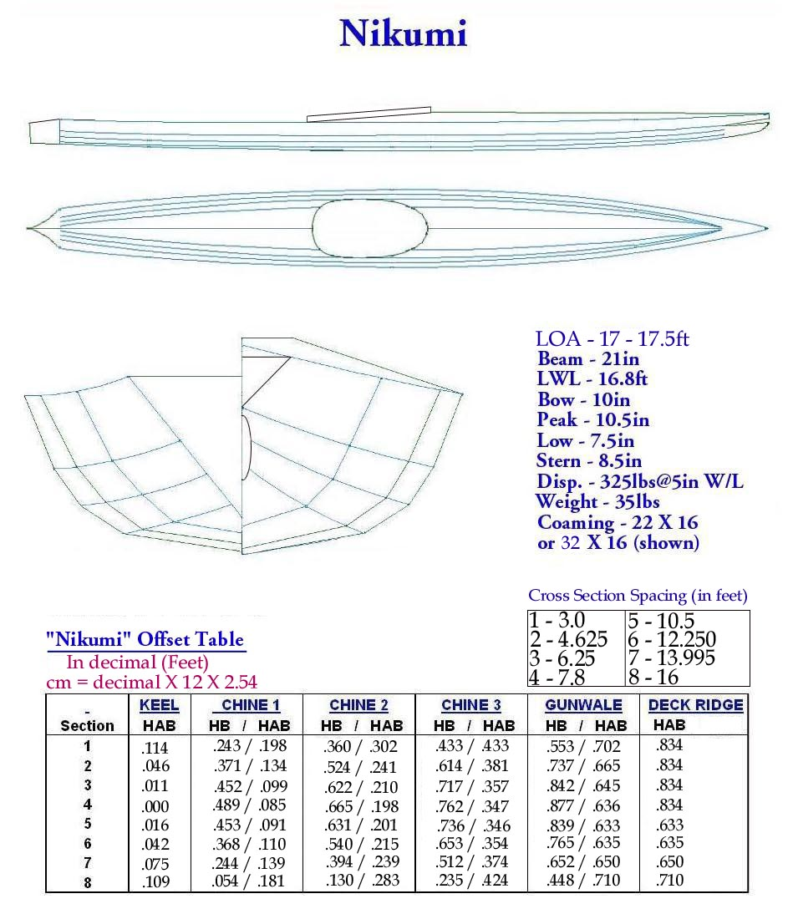

| Nikumi - Offsets / Drawings | Menu Previous Page Next Page |
|

The "Nikumi" Iqyax / Baidarka is a wood frame multi-chine touring kayak. Construction is of cedar stringers and plywood cross sections. The aft deck profile is a flat surface equal to the gunwale height at each station. This shape is useful in entry / exit and in rolling. The forward deck has a single stringer Aleut peaked style deckridge.
** The 36" Cross Section 1 distance from the bow is a variable. Place station one on the strongback near the end with all other cross sections starting at this point. The bow can vary between 36" and 44" or so ahead of the Cross Section 1 station. This will be determined during construction. The next several pages display bow and stern construction details including an extra cross section (0) whose positioning is optional if needed. This is more art than science, especially when a "Bifid" bow is involved ! |
|